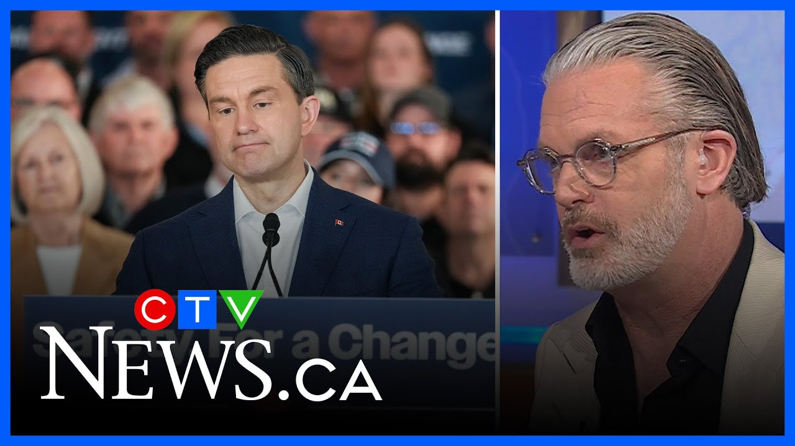

来B站一起耍【Global每日双语简报】
【保守党在竞选前过度施压试图赶走特鲁多是一个战略错误 | 专家讨论】
Summary: The panel discusses the conservative campaign's strategic error of focusing too much on ousting Trudeau before the election, which backfired and led to a missed opportunity for a conservative majority.
摘要： 专家讨论认为，保守党竞选策略失误在于大选前过度聚焦于赶走特鲁多，结果适得其反，错失保守党多数席位的机会。

⏱️ Estimated Reading Time: 3 min
You we we talked earlier, Omar mentioned that you made a ton of news, so did the premier, Premier Doug Ford, for criticizing the conservative campaign for not focusing on Donald Trump enough.
我们之前讨论过，奥马尔提到你制造了很多新闻，省长道格·福特也是如此，他批评保守党竞选活动对特朗普的关注不足。
Uh is this outcome emblematic of that in your view?
在你看来，这一结果是否象征了这一点？
I think that's part of it, but I I think in many respects, you know, as you reflect on this race, it was largely uh put in in jeopardy before the campaign even began.
我认为这是部分原因，但从很多方面来看，当你回顾这场竞选时，它在竞选开始前就已经岌岌可危。
I think the biggest strategic error that the conservatives had going into this election was uh pounding uh uh Justin Trudeau and the Liberals with tens of millions of dollars of pre-re advertising to the point where they drove them down to 18 19% in the polls and made it an existential uh uh question uh around the leadership of the Liberal Party.
我认为保守党在这次选举中最大的战略错误是花费数千万美元在前期广告中猛烈攻击贾斯汀·特鲁多和自由党，导致他们在民调中跌至18-19%，并使自由党的领导层面临存亡问题。
And you know, it's not just Trump, it's the loss of Trudeau.
而且，不仅是特朗普的问题，还有特鲁多的失利。
If you think of this election race as if uh uh Pierre Polyv was fighting against Justin Trudeau and you kept everything else the same, we'd be having a conservative majority tonight, I believe.
如果你把这场竞选想象成皮埃尔·波利耶夫与贾斯汀·特鲁多的对决，而其他条件不变，我相信今晚保守党会赢得多数席位。
So, I I think it was a big strategic error.
所以，我认为这是一个重大的战略错误。
Uh we just went too hard in the uh in the leadup to the campaign and we got rid of the guy who was going to deliver a victory for us and that guy was Justin Trudeau.
我们在竞选前阶段用力过猛，结果赶走了原本能为我们带来胜利的人，那个人就是贾斯汀·特鲁多。
That said, you know, there was still, I think, an opportunity to change more of the focus towards Trump uh going into the campaign and there was a a space when the li liberal leadership was going on.
话虽如此，我认为在竞选期间仍有更多机会将焦点转向特朗普，而且在自由党领导层变动期间存在空间。
There was a real vacuum there.
那里确实存在真空。
That's the vacuum that Ford stepped into and and uh but he didn't have to to do that alone.
福特填补了这一真空，但他不必独自行动。
I think there was an opportunity for the federal conservatives to do the same.
我认为联邦保守党也有同样的机会。
But all of that to say, you know, uh this is a heartbreaking night for conservatives across the country.
但总而言之，这对全国保守党人来说是一个心碎的夜晚。
And uh I think there's you know there's going to be a lot of focus on what happens next both inside the party but also to see uh what Carney and the Liberals will do.
我认为接下来会有很多焦点集中在党内的发展，以及卡尼和自由党的行动上。
Are they going to reach out to the west?
他们会向西部伸出橄榄枝吗？
Some of the things that Bronna broke up brought up earlier I think are are really poignant.
布罗娜早些时候提出的一些问题我认为非常尖锐。
You know, there's going to be a need to build some bridges uh to parts of the country that really felt left out by this Liberal government over the last 10.
有必要与那些在过去10年中感到被自由党政府忽视的地区建立桥梁。